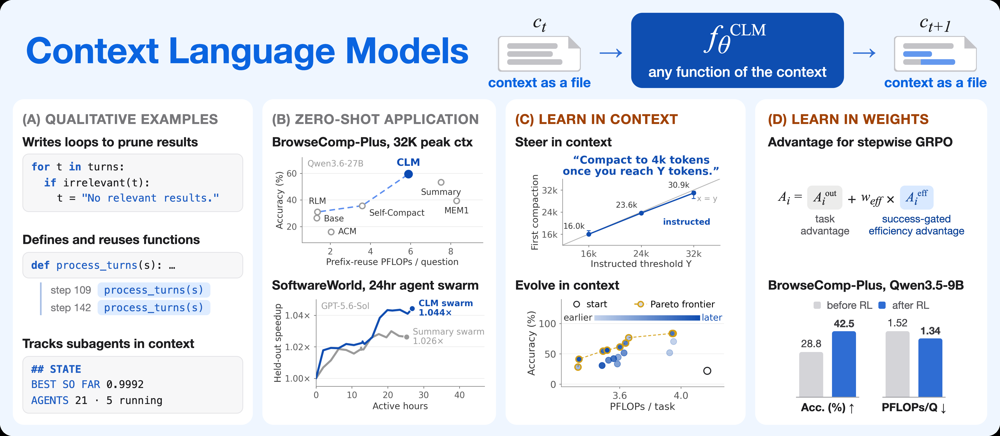
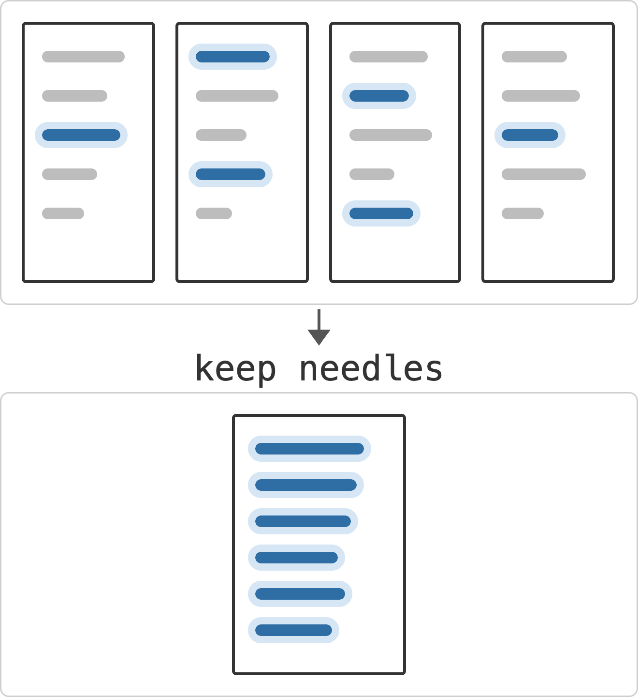
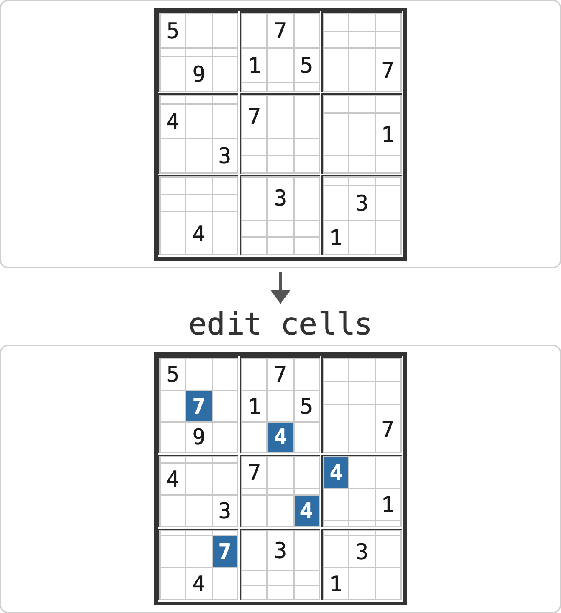
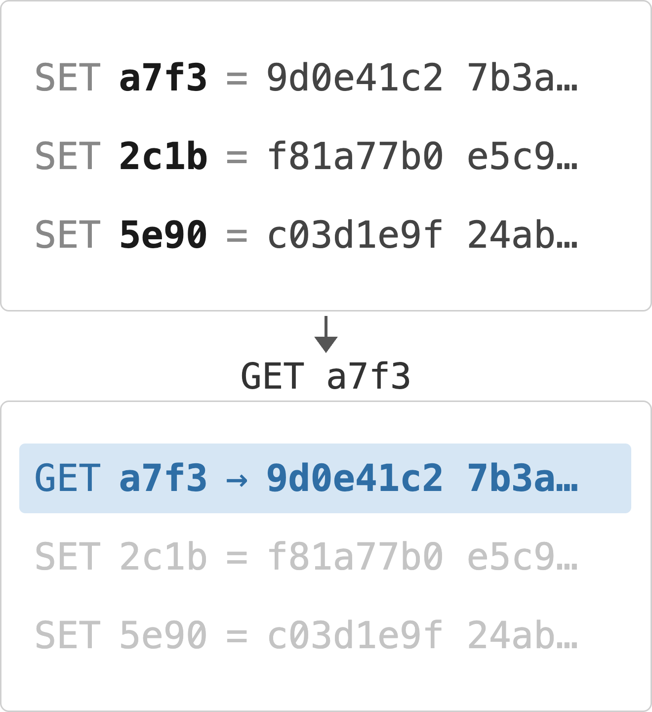
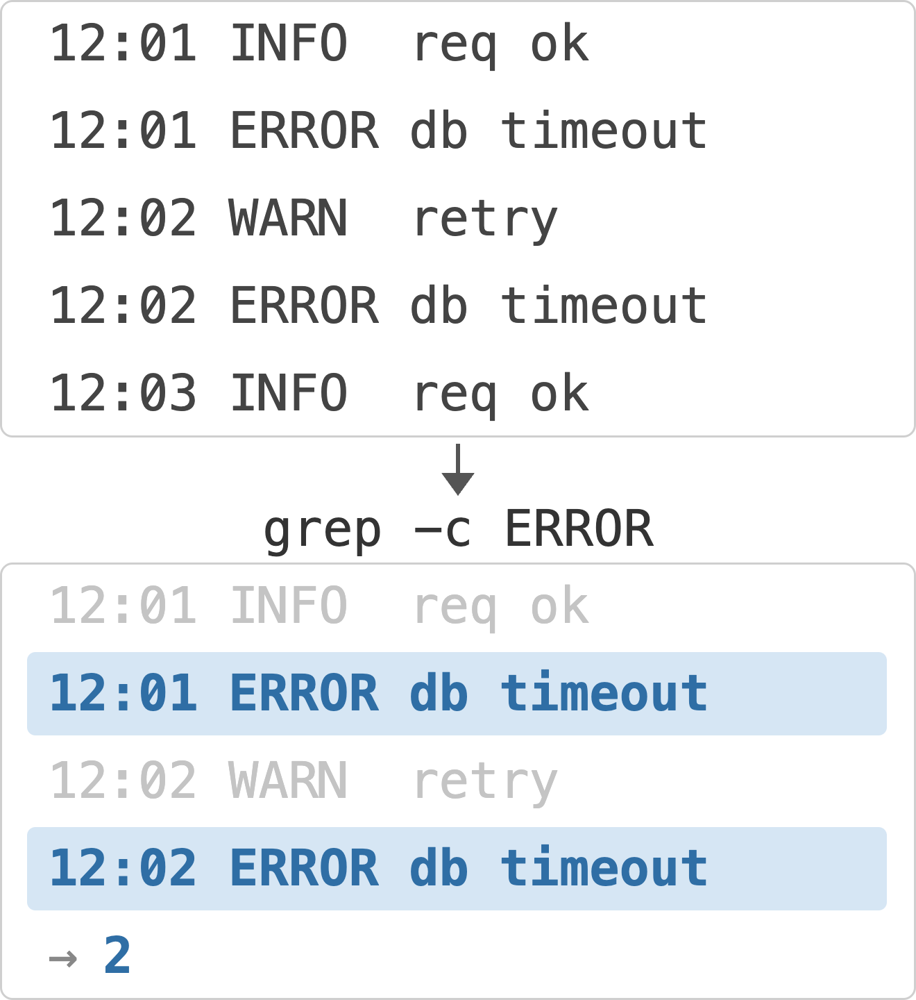
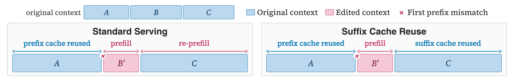
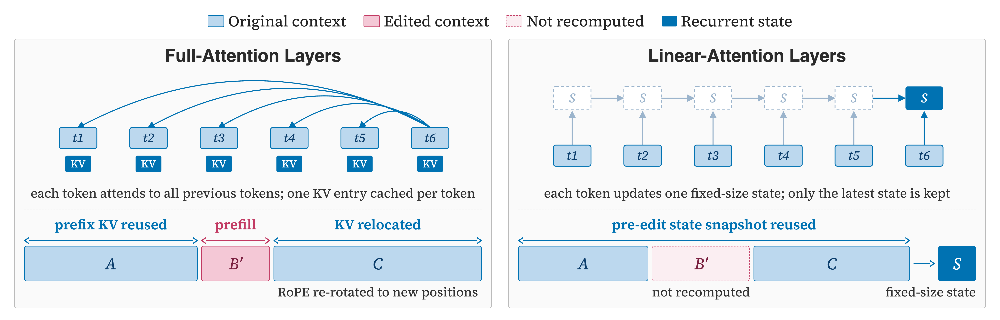
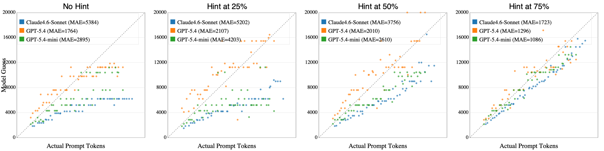

Context Language Models
Rulin Shao, Shannon Zejiang Shen, Junjie Oscar Yin, Yuetai Li, Minheng Wang, Hamish Ivison, Radha Poovendran, Nathan Lambert, Teng Xiao, Mike Lewis, Wen-tau Yih, Luke Zettlemoyer, Pang Wei Koh
Abstract（原文）
展开 / 收起 Abstract 原文
01论文速览右侧批注 ›
先用几段话回答：这篇文章为什么要做、具体想解决什么、怎样做、最后得出了什么结论。
研究背景
长程智能体需要在很多轮交互中保留事实、删除噪声并继续推理。已有上下文管理多由外部 harness 固定压缩时机和动作，或只提供压缩、卸载、检索等受限工具；这些策略在信息保留、原值更新和长任务适应上会失效。论文试图把“如何修改自己的实时上下文”变成语言模型可直接控制和学习的能力。
研究目标
把模型的实时上下文映射为可编辑文件，让模型通过通用 Bash 操作自主重写上下文，能否在长程检索、编码与开放发现问题中同时提高效果和计算效率？这种能力能否通过文本指令、技能演化和强化学习进一步获得，并通过服务端缓存复用降低编辑后的重算成本？
研究内容
- 把上下文变成可编辑状态：定义模型控制的转移 $c_{t+1}=f_\theta^{CLM}(c_t)$，将实时上下文镜像为文件；模型用 Bash 原位修改后，文件内容会同步回下一次模型调用，多个上下文文件也支持子智能体与 agent swarm。
- 用独立诊断和多类长程任务检验效果：ContextBench 构造 Needle Retention、Sudoku Sketchpad、KV Store 与 Log Triage 四类任务；随后在 TerminalBench 2.1、TBLite、BrowseComp-Plus、数学优化、EdgeBench-10 与 Software World 上做零样本比较。
- 检验可学习性：先用一句自然语言指令改变压缩策略，再用 proposer 演化可复用技能文档；强化学习采用逐段 GRPO，并在成功轨迹内部用 prefix-reuse FLOPs 排序，形成 success-gated efficiency advantage。
- 降低编辑后的服务成本：Suffix Cache Reuse 把原文中仍然保留下来的后缀 KV 状态迁移到新位置并重算 rotary position，保留少量陈旧状态，以换取避免整段重新 prefill；同时为线性注意力层保留 recurrent-state 快照。
主要结论
- 零样本 CLM 在多项长程任务上改善效果或成本：Qwen3.6-27B 在 BrowseComp-Plus 上达到 59.4%，相对最强 Codex-style summary 基线高 11.4%，prefix-reuse FLOPs 少 21.5%；在 TerminalBench 2.1 匹配基线且只用其 70% FLOPs，在 TBLite 达到 73.7%，高于基线的 67.0%。
- 开放发现与仓库优化也出现收益：EdgeBench-10 上 CLM 得分为 44.6、179 PFLOPs，summary 基线为 42.3、437 PFLOPs；Software World 在同一 API 支出下报告了 65% 更大的下游加速。数学优化四题中 CLM 的 best-of-run 分数均最高，但每题仅运行一次。
- 上下文策略可以显式引导和演化：一句提示可改变压缩阈值、语义边界与备份行为；技能演化在 ContextBench 的 KV Store held-out split 上把准确率从 38.3% 提高到 74.2%，增加 35.9 个百分点。
- 强化学习让较小模型学会更省的计算路径：Qwen3.5-9B 在 BrowseComp-Plus 上由 28.8% 升到 42.5%，相对提升 47.6%，推理成本由 1.52 降至 1.34 PFLOPs/question；同配方训练的 summary harness 达到 42.1%。
- SCR 在匹配准确率时降低服务端计算：在 830 个 BCP 问题上，SCR 保持 60.2% 准确率，使用标准 SGLang 的 65% prefix-reuse FLOPs；其中 7.8% 的额外可复用 prompt tokens 有 5.3 个百分点来自聊天历史中的 reasoning-token 删除，说明该方法也适用于普通推理模型服务。
结果支持一种更主动的上下文管理方式：模型直接决定保留、重写或删除哪些状态，能够减少固定摘要策略造成的信息损失和无效重算。技能演化与 RL 的结果进一步表明，上下文管理可以作为可学习的过程能力，并可通过 FLOPs 奖励在成功轨迹内部优化效率。证据主要覆盖指定模型、harness 和长程任务；可编辑上下文是否在未知任务与安全攻击下保持优势仍需检验，SCR 的有效性也依赖其对陈旧缓存状态的近似。
02原文精读右侧批注 ›
沿着原文的章节顺序，区分每一节说了什么，以及这些内容如何支撑论文的论证。
分章节总结与分析
Abstract
p.1摘要提出 Context Language Models：把实时上下文当作文件，让模型自由修改。报告的四组证据分别覆盖 BrowseComp-Plus、EdgeBench、24 小时多仓库 agent swarm、技能演化和 RL，并给出 Suffix Cache Reuse 的服务端计算收益。
摘要把多个实验、预算和参照对象压缩在一段话中：11.4% 指相对最强基线的准确率提升，5% EdgeBench 增益与 35.9 点技能演化增量各有不同口径。阅读主文时应按任务、模型、计算预算和评价单位逐项核对，避免把这些百分比视为同一种效应。
Introduction
p.1引言把长程上下文管理描述为语言模型的缺失能力：已有工作依赖固定 harness 或受限工具，而 CLM 允许模型自行决定如何重写上下文。作者将形式化定义、ContextBench、prefix-reuse FLOPs、技能演化、RL 与 SCR 组织为一条论证线。
“The Bitter Lesson”式叙述提供了研究动机，尚未构成机制证据。该节汇集了后面多个实验的结论，许多跨任务收益属于预报告；真正可检验的关键是 §5 中是否有匹配预算、相同 harness 与可重复评测支持这些说法。
Related Work
p.3相关工作按 harness 调度与模型受控动作两条路线组织。固定摘要、定期压缩和受限的压缩/卸载/检索工具增加了模型自主性，但仍把可执行动作和策略交给外部系统预先规定；RLM 则关注读取输入，未提供实时历史的原位改写。
这种分类清楚地把“何时/怎样改上下文”与“怎样读取外部输入”分开。作者对现有系统的定位来自文献比较，本文未重跑这些系统；因此“更充分的编辑自由带来更好策略”仍是待实验检验的假设，不能从 taxonomy 直接得出。
Pilot Study with ContextBench: A Diagnostic for Context Management
p.3试点引入 ContextBench 的四个任务：逐字保留 needle、原位更新数独、从大值批次卸载与检索 KV，以及从日志批次回答计数/查找。32K 窗口下压力升至 24×，用于暴露摘要丢失、整表重写和无法按需逐出上下文等失败。
任务刻意降低推理负担，使表现更接近纯粹上下文管理能力；方法专属 skill 也帮助排除工具使用误解。图形和文字描述了基线失败，本节没有单独给出数值表，因而更适合作为诊断设计依据，不能独立支持 CLM 相对基线的整体优势。
Context Language Models (CLMs)
p.4该节是 CLM 方法总入口，正文只有标题；具体形式化、学习路径与服务优化分别放在 4.1–4.3。
保留顶层标题有助于阅读层级。单独阅读这一块无法得到机制细节，后续分析应回到三个小节区分接口自由度、训练目标与服务近似。
Formal Definition and Implementation with Context as a File
p.4标准 LM 只能把输出追加到历史，CLM 则允许任意由模型控制的上下文转移。实现把实时上下文映射为可写文件，模型通过 Bash 增删、重排或压缩；每个修改同步给下一次 LLM 调用。多个上下文文件可支持子智能体与 agent swarm。图 3 展示了维护状态板、添加内部 notes 角色、用循环压缩搜索结果和定义复用函数等行为。
文件接口使模型能执行任意编辑，但可用行为仍受 Bash、system prompt、文件路径与同步实现约束，“unrestricted”描述的是编辑空间的开阔程度。定性案例来自零样本运行，有助于说明能力形态，不能量化这些策略对成绩的贡献。实时可写状态还扩大了持久化注入面。
In-Context Learning and Reinforcement Learning for CLMs
p.5CLM 可通过三种方式学习上下文策略：在 prompt 中加入技能或指令；用 proposer 在训练 rollout 上提出候选技能，在开发集选择并最后测 held-out；用 stepwise GRPO 将完整轨迹结果优势广播到各模型调用。success-gated efficiency advantage 只在成功轨迹内部按 prefix-reuse FLOPs 奖励低成本样本，并裁剪到 [-1,1]。
成功门控避免了直接奖励“删得多”导致的信息破坏，FLOPs 项也同时考虑编辑触发的重算。组内成功轨迹少于两条时效率优势置零，这在困难任务上会让效率信号稀疏；训练稳定性、不同 KL/权重设置与 reward hacking 仍未在本节展开。
(More) Efficient CLM Serving with Suffix Cache Reuse
p.6SCR 处理原位编辑导致的缓存失配。若原上下文为 [A B C]、编辑后为 [A B' C]，标准 prefix cache 会重新 prefill B' 与 C；SCR 迁移仍存活的 C 缓存、重算位置编码，并只对 B' 或新文本重新计算。存活的缓存状态来自编辑前上下文，因此保留了一定陈旧信息。
该方法把节省重算建立在近似状态复用上，而非精确重算；准确率保持需要经验验证。它也不替代 CLM 的上下文策略，服务端优化只影响相同行为下的成本，判断主结果时应把零样本效果与 SCR 节省分开。
Results
p.7结果主节依次组织零样本长程任务、上下文与权重学习以及 SCR 服务评测。
此块只含标题，没有独立证据。各子节使用不同模型、任务长度和预算，应分别解释，不能合并成单一“总体准确率”。
Evaluating CLMs Zero-Shot on Long-Horizon Agentic Tasks
p.7零样本测试覆盖终端编码、深度研究、数学发现、单仓库优化和多仓库 swarm，时间尺度从数小时到一天，交互从数十轮到上千轮。
这一节说明评测覆盖的时间与协作维度，具体模型、预算与指标在 5.1.1–5.1.2 展开。广泛任务列表本身不提供可比性；需要核对每个子实验是否使用相同 backbone、上下文窗口和成本口径。
Coding and Deep Research Tasks
p.7在共享 Mini-SWE-Agent 与 32K 预算下，Qwen3.6-27B 的 CLM 在 BCP 得 59.4%，相对 Codex-style summary 高 11.4%，并用少 21.5% 的 prefix-reuse FLOPs。TerminalBench 2.1 匹配最强基线且只使用其 70% 计算；TBLite 达到 73.7%，对基线的 67.0%，计算为其 91%。
BCP 的相对增益与 TBLite 的绝对百分点差都支持工程收益。这里的“match”意味着未观察到优于 summary 的准确率，优势集中在计算效率。所有方法共享 harness 和模型的描述增强了可比性，但方法专属技能与不同的上下文交互仍属于复合干预。
Open Discovery Problems
p.7开放发现问题包括四个 AlphaEvolve/OpenEvolve 数学题、EdgeBench-10 的单仓库 12 小时优化，以及 Software World 中六个相互依赖仓库、四个 unseen downstream 包的 24 小时协作。CLM 在数学题四题的 best-of-run 分数均最高；EdgeBench 上为 44.6/179 PFLOPs 对 42.3/437，Software World 在同一支出下报告 65% 更大下游加速。
这些任务把上下文管理放在真实的工具循环、验证器反馈与长时间交互中，外部效度强于 ContextBench。数学题每题仅一次运行并使用 best-of-run；Software World 的成本按 API USD 计算，摘要中的 “same compute” 与该口径不完全相同。EdgeBench 的子智能体版本在 32K 下只增加少量收益，说明多文件多 agent 并不自动获益。
Learning Better Context-Management Strategies in Context or in Weights
p.8一句自然语言指令就能改变压缩触发阈值、在子问题边界压缩以及压缩前备份的行为。技能演化在 ContextBench 上扩展准确率–成本 Pareto 前沿；assisted 与 self-evolution 分别在 KV Store 上优于初始策略。Qwen3.5-9B 经 RL 后 BCP 由 28.8% 升到 42.5%，同配方 summary 达到 42.1%；CLM 后训练使用 1.34 PFLOPs/question，后者为 2.19。
指令实验揭示模型可被显式引导，技能演化则测试了可复用过程知识；两者都属于模型能力的可学习性证据。RL 结果只在单一较小基座、一个训练域和一个 held-out benchmark 上呈现，训练随机性没有在本节量化。前训练 CLM 落后 summary 六点，也说明较小模型的自主上下文能力需要训练补足。
(More) Efficient Serving with Suffix Cache Reuse
p.9在与标准 SGLang 匹配的任务准确率 60.2% 下，SCR 只需 65% 的 prefix-reuse FLOPs，即降低约 35%。它也能利用聊天端点为隐藏 reasoning 而删去旧 token 的情况；830 题 BCP 上所有 prompt token 中，额外复用率 7.8 个百分点，其中 5.3 来自 reasoning stripping、2.5 来自其他上下文编辑。
匹配准确率让服务优化具有较强实用意义；结果主要集中在 Qwen3.6-27B 的 BCP 负荷，尚未证明对全部任务和模型无损。FLOPs 节省是模型计算估计，页面还报告 wall-clock 之外的服务端 token 构成，真实吞吐与能耗仍需单独测量。
Discussion and Future Work
p.10讨论首先指出模型可编辑上下文的安全风险：自生成指令或 prompt injection 可跨轮持久化，已有 compaction summary 中出现过未授权指令。未来方向包括扩大 CLM 的 RL，以及把现有 harness 的上下文变换蒸馏为 CLM 技能或权重。
安全讨论把权限边界放在方法核心之上；当前实验只测能力与效率，没有测恶意编辑、隔离、回滚或审计。harness-to-CLM 蒸馏被表述为研究计划，尚无对应的效果与资源结果，不能当成已验证的扩展路线。
A. Extended Related Work
p.13附录按 harness 调度、受限动作空间、meta-harness 优化、REPL 变量、非前缀 KV 复用、上下文管理 RL、成功条件化效率目标和外部记忆展开。CLM 的区分点是让模型直接改写自身实时状态，并把外部 memory 与 live context 明确分开。
该综述较完整地连接了 agent harness、serving cache 与 memory 三条文献线，支持论文的跨层定位。比较仍以概念与引用为主，没有逐系统复跑；因此它说明设计空间，而不提供各机制的相对效果。
B. Suffix Cache Reuse
p.14SGLang 的 radix tree 只复用最长相同前缀。SCR 对编辑前后的 prompt 做 diff，找到仍存活的后缀 span，迁移最多 K=6 个最长 span，重旋转 rotary keys；线性注意力层使用编辑前的 recurrent-state 快照。对多个存活 span，SCR 限制迁移数量以控制近似累积。
SCR 的实现细节说明收益来自避免重算未变文本，其正确性依赖旧状态与当前上下文差异可接受。线性注意力层继续从编辑前 snapshot 推进，可能使新增编辑内容在该层缺失，论文依赖后续完整 attention 层传播影响。K 的敏感性与准确率保持只在 64 题、一个模型上分析，泛化仍需扩大。
C. Prefix-Reuse FLOPs Computation
p.17附录给出每 token 投影、MLP、attention score 与 decode 的 FLOPs 公式，并以 Qwen3.6-27B 的层数、hidden size、attention heads 和 Gated DeltaNet 结构代入。编辑造成 first mismatch 后，后续 token 需重新 prefill；illustrative 例子中起始编辑可让 turn 成本达到 append-only 的 7.7 倍。
该指标适合比较相同模型下编辑策略的计算负担，属于理论估计：忽略 embedding、归一化、激活、recurrent update 与硬件利用率。它能解释 prefix cache 的差别，不能直接替代 wall-clock 延迟、吞吐或美元成本。
D. ContextBench
p.18ContextBench 把输入作为连续 user messages 推入上下文，模型只能在处理当前操作后请求下一项；每实例由 seed 生成并预检。任务针对保留、原位更新、KV 卸载检索与日志查询，评分检查模型当时拥有的上下文，磁盘中未被重新取回的内容不计分，并为任务与保留状态设置窗口预算。
这一协议把上下文管理从推理能力中分离出来，且给所有方法提供方法专属 skill，比较设计较透明。合成操作与固定 grader 提高可控性，也带来真实性缺口：自然语言歧义、工具副作用和长文档权限没有纳入。该基准适合作为机制诊断，不能单独代表生产智能体能力。
E. Experimental Configurations
p.19附录列出每个系统的压缩策略与 skill，以及 ContextBench、TB2.1、TBLite、BCP、数学优化、EdgeBench-10、Software World、指令控制、技能演化和 RL 的模型、预算、turn/time limit、seeds 与评分。RL 配置包含 3,040 prompts、70 steps、每步 8 prompts×32 rollouts、16 张策略 GPU 与 48 张 rollout GPU。
这些细节提高了实验透明度，也显示评测混合了 API 模型、公开任务、长时分容器运行等多个平台，复现门槛很高。不同实验的 context budget、turn limit 和 judge 不完全相同，横跨任务比较时应回到各自配置，尤其不能把 BCP FLOPs 与 EdgeBench 长时间成本等同。
F. Supplementary Results
p.24补充结果比较 Qwen3.5-9B 与 Qwen3.6-27B：较小模型编辑更少，中位峰值上下文更高，收益也更依赖模型能力。128K EdgeBench 中 CLM 为 47.3、subagent 版本 50.2，summary 47.8；技能演化在四个 ContextBench 任务的开发集显著提升，KV Store held-out 从 38.3% 到 74.2%；RL 训练曲线展示 accuracy 与 FLOPs 的变化。
规模对比支持“模型越能判断何时编辑，收益越大”的假设，不过两个模型属于同一家族且训练与推理配置不同。128K 下子智能体带来额外收益，而 32K 下收益很小，说明收益随预算和协作负载变化。补充结果仍未提供跨任务训练 seed 的完整不确定性。
G. Analysis on the Context Length Awareness of Existing LMs
p.27通过让模型估计当前 prompt 的 token 数，论文发现长上下文下估计会聚集到固定桶值；Claude-4.6-Sonnet 倾向低估，GPT-5.4 的估计最接近实际。环境提供 token-count hint 能提升准确性，距离估计点更近的 hint 更有效。
该诊断解释了为什么 CLM 仍需要 2,048-token 余量提醒和外部 token 信息：自我管理要求模型知道何时接近窗口上限。实验只有每个模型 50 个输入，细节主要在图中；它支持 awareness 是限制，不能说明所有模型都会以同样方式失效。
关键引文
论文图表








Zotero 高亮
Zotero 笔记
03参考意义右侧批注 ›
把论文放回实际研究和复现决策中：它有什么价值，代价和风险是什么，还留下哪些问题。
风险与局限
- 机制归因未完全隔离：CLM 同时获得上下文文件、Bash 编辑接口、同步机制与预算提醒。基线各自带有方法特定技能，因此比较的是整套系统；缺少“能编辑同一文件但不被要求维护上下文”或等提示长度的对照。
- 相对百分比容易被误读：BCP 的 11.4% 指相对最强基线的比例，5% EdgeBench 增益与 47.6% RL 提升也分别对应不同参照。这些数字不能直接解释为绝对百分点。
- 部分压力测试证据较薄：数学优化每题只运行一次并按 best-of-run 比较，Software World 只报告单一成本口径和总体 speedup；文中没有给这些结果的任务级不确定性区间。
- SCR 使用近似缓存状态：迁移的 KV 由编辑前前缀计算，线性注意力层继续使用编辑前 recurrent state；准确率保持来自特定模型和 BCP 评测，不能保证在其他编辑模式或任务上无损。
- 安全与隐私边界未测：可编辑上下文可以持久化自生成指令和 prompt injection。讨论章节将其列为未来工作，没有提供攻击成功率、隔离机制或数据泄漏实验。
- 模型与运行成本限制可复现性：主实验涉及 GPT、Claude 与 Qwen 系列及 12–24 小时运行；RL 使用 16 张 H200 训练策略并另用 48 张 rollout GPU，完整资源与版本披露仍不足以在普通环境中独立重跑。
- 评测得分存在 judge 依赖：BrowseComp-Plus 使用 Qwen3.5-27B 按模板判分；ContextBench 有确定性 grader，但长程真实任务的最终质量仍部分依赖模型 judge。
实验依赖多套昂贵的长时分模型评测和 API 模型，部分结论由相对百分比、best-of-run 或单一训练运行给出。ContextBench 是合成的上下文诊断任务，数学优化每题只运行一次；Software World 的摘要使用“same compute”，正文实际按累计 API 支出计成本。模型可编辑上下文还扩大了持久化 prompt injection 的攻击面，论文提出了风险，没有给出系统防御实验。
成本与复现条件
最小规模复现需要能执行 Bash 的 agent runtime、实时上下文文件与同步服务、对应模型 endpoint、任务/评测框架和请求级 token/FLOPs 日志。零样本主实验使用 Qwen3.6-27B 等多模型，BCP 配置为全 830 题、100 turns；EdgeBench-10 每题运行 12 小时、3 seeds；Software World 持续 24 小时以上。技能演化与 RL 的算力明显更高：RL 训练 70 步，每步 8 个 prompt、每个 32 条 rollout，并列出 16+48 张 H200 的划分。代码链接已给出，但论文笔记未独立检查发布仓库、模型权重和第三方 benchmark 的可访问性。
与我研究的关联
一般研究价值在于为长程智能体与数据合成提供一套可观测的上下文接口：可以把每次上下文编辑记录为状态变更，把事实保留、原位更新、卸载与检索分开测试，并在训练或筛选数据时同时记录效果和 prefix-reuse 成本。对需要多文件工作区或验证器的任务，CLM 的思路提示将“隐藏中间状态”和“模型可见状态”明确分层；对上下文相关的训练数据，还应加入注入、过时缓存和错误重写等对抗样本。此处只讨论通用研究意义，没有关联任何特定个人项目。
待追问
- 在相同 prompt 长度、相同文件访问权限和相同预算提醒下，仅开启实时上下文改写能带来多少独立收益？
- 哪些编辑模式最容易导致事实丢失、权限泄漏或持久化注入？能否为上下文文件建立可验证的写前约束和审计日志？
- 把 SCR 的缓存近似与任务风险联系起来，能否按编辑跨度、注意力层类型和 token 位置给出误差界？
- 在真实团队协作、多智能体共享状态与长文档编辑中，模型控制的上下文能否保持可解释性并支持回滚？
- RL 的效率优势能否跨任务域、跨模型规模迁移，还是会被特定 training reward 与 judge 偏置放大？
- ContextBench 的四项任务与真实长程任务之间的相关性如何，哪些新增压力因素最能预测 agent 的长期表现？
- 开放实验与模型资源后，外部团队能否在固定硬件上复现 BCP、EdgeBench 与 SCR 的关键数值？
我的笔记
阅读版本与来源：arXiv:2609.37725v1，2026-09-29；作者 Rulin Shao 等。PDF 通过 arXiv 下载，正文由 PyMuPDF 文本抽取后按 PDF 目录与标题坐标重建为无重叠的 22 个章节/附录块。
阅读路径：先看 §3 的 ContextBench 诊断，再沿 §4.1 的上下文文件、§4.2 的文本/RL 学习和 §4.3 的 SCR 机制阅读，最后用 §5 的结果与 Appendix E 的实验配置核对数字口径。
证据分层：执行结果、held-out 评测与确定性 ContextBench grader提供较强的经验支持；数学优化的单次运行、模型 judge、专用基线与 SCR 的近似缓存构成主要边界。论文没有给出对上下文编辑功用的独立 ablation，因此“模型自主”这一解释需要保留。
页数：PDF 共 27 页；主结果在 pp.1–9，实验配置与补充结果在 pp.19–27。